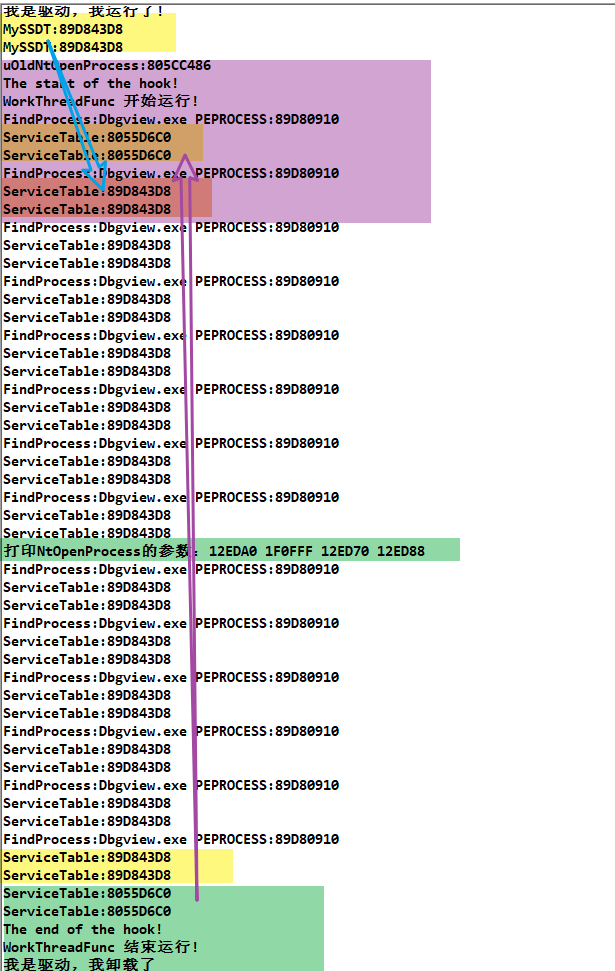
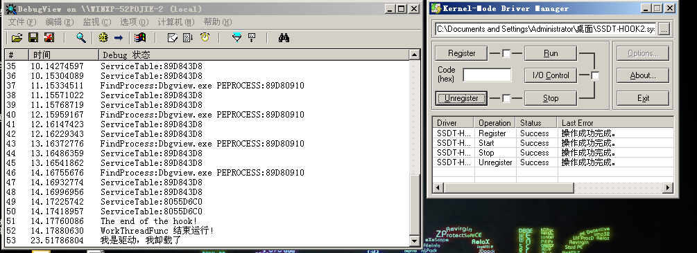

# SSDT HOOK 隐藏思路
通过逆向分析 API 由 3 环进 0 环的过程，找到其中涉及系统服务表（SST）的位置，可以分析出一些能动手脚的地方。
增加函数项，修改原有代码服务号。
修改线程结构体_KTHREAD + E0 （这里存放着 SSDT 的地址），改成我们的自己构造的 SSDT。
针对的检测是：检测老的 SSDT 有没有被挂钩，但我们不动操作系统的 SSDT 这样就可以绕过了。
首先找到进程再找其内的线程结构体，然后修改为我们构造的 SSDT 的地址，既要先拷贝一份 SSDT，并且因为线程可能会被切换，我们要设置一个定时器不停的遍历修改。
或者修改把线程 E0 赋给 edi 的值，既 INLINE HOOK 修改这里。
- 系统调用过程中有两个环节是 找到要调用的函数 以及 去调用这个函数，我们可以改找到的函数，改调用的函数。
另外火哥还说了 改所有线程的 E0，在切换线程的地方 HOOK 等等……。
在 SSDT 这里能做的前辈们差不多都已经做过了…… 我们主要学习的是思想。・
# 代码实现
Hook.h
#pragma once | |
#include "ssdt.h" | |
// 被 HOOK 函数的函数指针 | |
//HOOK NtOpenProcess 函数 | |
typedef NTSTATUS(NTAPI *PNTOPENPROCESS)( | |
PHANDLE ProcessHandle, | |
ACCESS_MASK DesiredAccess, | |
POBJECT_ATTRIBUTES ObjectAttributes, | |
PCLIENT_ID ClientId | |
); | |
// 函数声明 | |
VOID HookNtOpenProcess(); | |
VOID UnHookNtOpenProcess(); | |
VOID PageProtectOn(); | |
VOID PageProtectOff(); | |
NTSTATUS NTAPI ModifyNtOpenProcess( | |
PHANDLE ProcessHandle, | |
ACCESS_MASK DesiredAccess, | |
POBJECT_ATTRIBUTES ObjectAttributes, | |
PCLIENT_ID ClientId | |
); | |
// 原来的函数地址 | |
ULONG uOldNtOpenProcess; |
Hook.c
#include "Hook.h" | |
VOID PageProtectOff() | |
{ | |
__asm | |
{ | |
cli; // 关闭中断 | |
mov eax, cr0; | |
or eax, 0x10000; // WP 位置 1 | |
mov cr0, eax; | |
} | |
} | |
VOID PageProtectOn() | |
{ | |
__asm | |
{ | |
sti; // 恢复中断 | |
mov eax, cr0; | |
and eax, not 0x10000; // WP 位置 0 | |
mov cr0, eax; | |
} | |
} | |
VOID HookNtOpenProcess() | |
{ | |
DbgPrint("The start of the hook!\t\n"); | |
PageProtectOff(); | |
MySSDT->ServiceTable.FuncTable[0x7A] = (ULONG)ModifyNtOpenProcess; | |
PageProtectOn(); | |
} | |
VOID UnHookNtOpenProcess() | |
{ | |
PageProtectOff(); | |
MySSDT->ServiceTable.FuncTable[0x7A] = uOldNtOpenProcess; | |
PageProtectOn(); | |
DbgPrint("The end of the hook!\t\n"); | |
} | |
NTSTATUS NTAPI ModifyNtOpenProcess( | |
PHANDLE ProcessHandle, | |
ACCESS_MASK DesiredAccess, | |
POBJECT_ATTRIBUTES ObjectAttributes, | |
PCLIENT_ID ClientId | |
) | |
{ | |
DbgPrint("打印NtOpenProcess的参数：%X %X %X %X\t\n", ProcessHandle, DesiredAccess, ObjectAttributes, ClientId); | |
return ((PNTOPENPROCESS)uOldNtOpenProcess)(ProcessHandle, DesiredAccess, ObjectAttributes, ClientId); | |
} |
ssdt.h
#pragma once | |
#include<ntddk.h> | |
//SST 系统服务表 | |
typedef struct _KSYSTEM_SERVICE_TABLE | |
{ | |
PULONG FuncTable; | |
PULONG Count; | |
ULONG ServiceLimit; | |
PUCHAR ArgumentTable; | |
}KSST, * PKSST; | |
//SSDT | |
typedef struct _SSDT | |
{ | |
KSST ServiceTable; | |
KSST ServiceTableShadow; | |
KSST un1; | |
KSST un2; | |
}SSDT, * PSSDT; | |
// 构造 SSDT | |
PSSDT MySSDT; | |
BOOLEAN ThreadFlag; | |
HANDLE hThread; | |
// 获取 SSDT 的导出变量 | |
extern PSSDT KeServiceDescriptorTable; | |
// 声明函数 | |
VOID DriverUnload(PDRIVER_OBJECT pDriver); | |
NTSTATUS DriverEntry(PDRIVER_OBJECT pDriver, PUNICODE_STRING pRegPath); | |
NTSTATUS GetCopySSDT(); | |
ULONG FindProcess(char* ProcessName); | |
VOID TraversalThreadReplaceE0(ULONG eProcess); | |
VOID ResetThreadReplaceE0(ULONG eProc); | |
VOID WorkThreadFunc(_In_ PVOID StartContext); |
main.c
#include"Hook.h" | |
VOID DriverUnload(PDRIVER_OBJECT pDriver) | |
{ | |
ThreadFlag = FALSE; | |
// 确保线程停止 | |
LARGE_INTEGER timer = { 0 }; | |
timer.QuadPart = -30 * 1000 * 1000; | |
KeDelayExecutionThread(KernelMode, TRUE, &timer); | |
if (MySSDT != NULL) | |
{ | |
ExFreePoolWithTag(MySSDT->ServiceTable.FuncTable, 'MySF'); | |
MySSDT->ServiceTable.FuncTable = NULL; | |
ExFreePoolWithTag(MySSDT, 'MySD'); | |
MySSDT = NULL; | |
} | |
DbgPrint("我是驱动，我卸载了\t\n"); | |
return; | |
} | |
NTSTATUS GetCopySSDT() | |
{ | |
//DbgPrint("KeServiceDescriptorTable:%p\t\n", KeServiceDescriptorTable); | |
PSSDT SSDTShadow = (PSSDT)(*(PULONG)(&KeServiceDescriptorTable) - 0x40); | |
//DbgPrint("SSDTShadow:%p\t\n", SSDTShadow); | |
//__asm int 3; | |
// | |
// 构造一份 SSDT | |
// 申请一份 SSDT 大小的内存 | |
MySSDT = (PSSDT)ExAllocatePoolWithTag(NonPagedPool, sizeof(SSDT), 'MySD'); | |
if (MySSDT == NULL) | |
{ | |
DbgPrint("MySD ExAllocatePoolWithTag Failed!\t\n"); | |
return STATUS_UNSUCCESSFUL; | |
} | |
memset(MySSDT, 0, sizeof(SSDT)); | |
DbgPrint("MySSDT:%p\t\n", MySSDT); | |
// 申请函数表的内存 | |
MySSDT->ServiceTable.FuncTable = (PULONG)ExAllocatePoolWithTag( | |
NonPagedPool, | |
KeServiceDescriptorTable->ServiceTable.ServiceLimit * 4, | |
'MySF' | |
); | |
if (MySSDT->ServiceTable.FuncTable == NULL) | |
{ | |
ExFreePoolWithTag(MySSDT, 'MySD'); | |
MySSDT = NULL; | |
DbgPrint("MySF ExAllocatePoolWithTag Failed!\t\n"); | |
return STATUS_UNSUCCESSFUL; | |
} | |
memset((PVOID)MySSDT->ServiceTable.FuncTable, 0, KeServiceDescriptorTable->ServiceTable.ServiceLimit * 4); | |
// 拷贝 SSDT | |
memcpy((PVOID)MySSDT->ServiceTable.FuncTable, (PVOID)KeServiceDescriptorTable->ServiceTable.FuncTable, | |
KeServiceDescriptorTable->ServiceTable.ServiceLimit * 4); | |
MySSDT->ServiceTable.ServiceLimit = KeServiceDescriptorTable->ServiceTable.ServiceLimit; | |
MySSDT->ServiceTable.ArgumentTable = KeServiceDescriptorTable->ServiceTable.ArgumentTable; | |
// 拷贝 Shadow 表 | |
// 判断 GUI 函数表是否已经加载，如果不是 GUI 线程，则操作系统不会挂载 GUI 函数表 | |
// 思路判断 Shadwo 函数表的物理页属性 | |
//if (影子表中的函数表被挂载了) | |
//{ | |
// // 申请影子表中函数表的内存 | |
// MySSDT->ServiceTableShadow.FuncTable = (PULONG)ExAllocatePoolWithTag( | |
// NonPagedPool, | |
// SSDTShadow->ServiceTableShadow.ServiceLimit * 4, | |
// 'MySH' | |
// ); | |
// if (MySSDT->ServiceTableShadow.FuncTable == NULL) | |
// { | |
// ExFreePoolWithTag(MySSDT->ServiceTable.FuncTable, 'MySF'); | |
// ExFreePoolWithTag(MySSDT, 'MySD'); | |
// DbgPrint("MySH ExAllocatePoolWithTag Failed!\t\n"); | |
// return STATUS_UNSUCCESSFUL; | |
// } | |
// memset((PVOID)MySSDT->ServiceTableShadow.FuncTable, 0, SSDTShadow->ServiceTableShadow.ServiceLimit * 4); | |
// memcpy((PVOID)MySSDT->ServiceTableShadow.FuncTable, (PVOID)SSDTShadow->ServiceTableShadow.FuncTable, | |
// SSDTShadow->ServiceTableShadow.ServiceLimit * 4); | |
MySSDT->ServiceTableShadow.FuncTable = SSDTShadow->ServiceTableShadow.FuncTable; | |
MySSDT->ServiceTableShadow.ServiceLimit = SSDTShadow->ServiceTableShadow.ServiceLimit; | |
MySSDT->ServiceTableShadow.ArgumentTable = SSDTShadow->ServiceTableShadow.ArgumentTable; | |
return STATUS_SUCCESS; | |
} | |
// 遍历进程 找到进程 | |
ULONG FindProcess(char* ProcessName) | |
{ | |
ULONG Pro; | |
// 由 KPCR+0x124 的位置得到当前 CPU 正在处理的线程的结构体的指针，_KTHREAD + 0x44 的位置能够得到此线程的进程结构体的地址 | |
__asm { | |
mov eax, fs: [0x124] ; | |
mov ecx, [eax + 0x44]; | |
mov Pro, ecx; | |
} | |
// 进程结构体 EPROCESS +0x88 的位置是一个链接所有进程的双向链表 | |
PLIST_ENTRY pListProcess = (PLIST_ENTRY)(Pro + 0x88); | |
BOOLEAN Flag = FALSE; | |
// 遍历进程 | |
while (pListProcess->Flink != (PLIST_ENTRY)(Pro + 0x88)) | |
{ | |
//EPROCESS 结构体 | |
ULONG NextProcess = ((ULONG)(pListProcess)) - 0x88; | |
if (strcmp(ProcessName, (PCHAR)(NextProcess + 0x174)) == 0) | |
{ | |
DbgPrint("FindProcess:%s PEPROCESS:%X\t\n", ((PCHAR)NextProcess + 0x174), NextProcess); | |
return NextProcess; | |
} | |
pListProcess = pListProcess->Flink; | |
} | |
return 0; | |
} | |
VOID TraversalThreadReplaceE0(ULONG eProc) | |
{ | |
if (eProc == NULL) | |
{ | |
DbgPrint("eProcess is NULL\t\n"); | |
return; | |
} | |
// 由进程结构体遍历线程 | |
// 获取线程的双向链表 | |
//+0x190 ThreadListHead : _LIST_ENTRY [ 0x89ff024c - 0x89dbd56c ] | |
PLIST_ENTRY ThreadList = (PLIST_ENTRY)(eProc + 0x190); | |
// 找了半天错误 原来是这里没有获取 焯！ PLIST_ENTRY CurrentThreadList = ThreadList | |
PLIST_ENTRY CurrentThreadList = ThreadList->Flink; | |
// 遍历线程 | |
do | |
{ | |
// 获取当前线程结构体的首部 | |
ULONG CurrentThread = (ULONG)CurrentThreadList - 0x22c; | |
// 取出线程中存储的 SSDT 的值 | |
PULONG ServiceTable = (PULONG)(CurrentThread + 0xE0); | |
DbgPrint("ServiceTable:%X\t\n", *ServiceTable); | |
if (ServiceTable == (PULONG)MySSDT) | |
{ | |
continue; | |
} | |
*ServiceTable = (ULONG)MySSDT; | |
CurrentThreadList = CurrentThreadList->Flink; | |
} while (CurrentThreadList->Flink != ThreadList->Flink); | |
} | |
VOID ResetThreadReplaceE0(ULONG eProc) { | |
if (eProc == NULL) | |
{ | |
DbgPrint("eProcess is NULL\t\n"); | |
return; | |
} | |
PLIST_ENTRY ThreadList = (PLIST_ENTRY)(eProc + 0x190); | |
PLIST_ENTRY CurrentThreadList = ThreadList->Flink; | |
// 遍历线程 | |
do | |
{ | |
// 获取当前线程结构体的首部 | |
ULONG CurrentThread = (ULONG)CurrentThreadList - 0x22c; | |
// 取出线程中存储的 SSDT 的值 | |
PULONG ServiceTable = (PULONG)(CurrentThread + 0xE0); | |
ULONG ShadowTable = *(PULONG)(&KeServiceDescriptorTable) - 0x40; | |
if (ServiceTable == (PULONG)ShadowTable) | |
{ | |
continue; | |
} | |
*ServiceTable = ShadowTable; | |
DbgPrint("ServiceTable:%X\t\n", *ServiceTable); | |
CurrentThreadList = CurrentThreadList->Flink; | |
} while (CurrentThreadList->Flink != ThreadList->Flink); | |
} | |
VOID WorkThreadFunc(PVOID StartContext) | |
{ | |
ThreadFlag = TRUE; | |
ULONG pProcess; | |
LARGE_INTEGER timer = { 0 }; | |
timer.QuadPart = -10 * 1000 * 1000; | |
DbgPrint("WorkThreadFunc 开始运行!\t\n"); | |
while (ThreadFlag) | |
{ | |
KeDelayExecutionThread(KernelMode, FALSE, &timer); | |
pProcess = FindProcess("Dbgview.exe"); // 一直查找此进程，因为此进程可能会被关闭 | |
TraversalThreadReplaceE0(pProcess); | |
} | |
ResetThreadReplaceE0(pProcess); | |
UnHookNtOpenProcess(); | |
DbgPrint("WorkThreadFunc 结束运行!\t\n"); | |
ZwClose(hThread); | |
} | |
NTSTATUS DriverEntry(PDRIVER_OBJECT pDriver, PUNICODE_STRING pRegPath) | |
{ | |
pDriver->DriverUnload = DriverUnload; | |
DbgPrint("我是驱动，我运行了!\t\n"); | |
// 拷贝一份 SSDT 表 | |
if (!NT_SUCCESS(GetCopySSDT())) | |
{ | |
DbgPrint("GetCopySSDT Failed!\t\n"); | |
return STATUS_UNSUCCESSFUL; | |
} | |
// 打印一下 MySSDT | |
DbgPrint("MySSDT:%p\t\n", MySSDT); | |
// 定义老的 NtOpenProcess 地址 | |
uOldNtOpenProcess = MySSDT->ServiceTable.FuncTable[0x7A]; | |
DbgPrint("uOldNtOpenProcess:%p\t\n", uOldNtOpenProcess); | |
// 开始 Hook | |
HookNtOpenProcess(); | |
// 遍历进程 找到进程 | |
// 遍历线程 替换 E0 位置 | |
// 设置定时器，每隔 10 毫秒修改一次 | |
// 结束时恢复 E0，结束 HOOK，关闭句柄 | |
extern HANDLE hThread; | |
PsCreateSystemThread(&hThread, 0, NULL, NULL, NULL, WorkThreadFunc, NULL); | |
return STATUS_SUCCESS; | |
} |
# 运行截图


# 反思
学过知识没有记住，要多做练习。